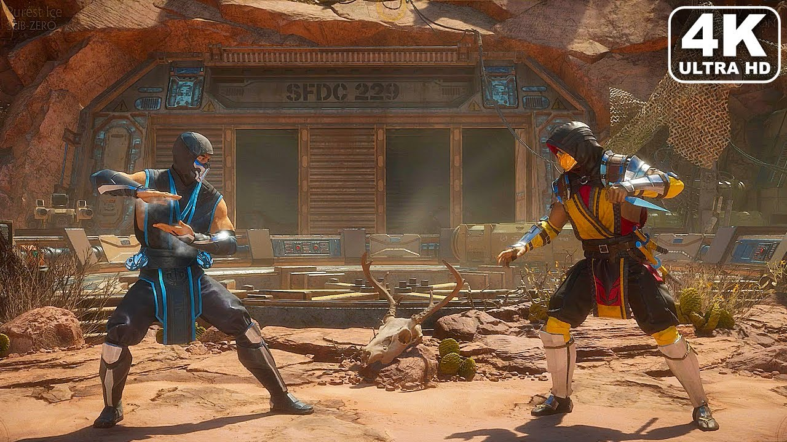

Mortal Kombat 11
Mortal Kombat 11 (también conocido como MK11) es la última edición de una de las sagas de videojuegos de peleas más famosas de todos los tiempos. Nace con el propósito de conmemorar su 25 aniversario y brinda la posibilidad de luchar con todos los personajes míticos de la serie y con otros nuevos.
Peleas realmente espectaculares
Mortal Kombat 11 ha redefinido su mecánica de juego para hacerla más espectacular, divertida y sencilla. De hecho, su sistema de control es totalmente nuevo y no tiene comparación dentro del género. Además, brinda la posibilidad de personalizar completamente a los luchadores. Esto, unido a su excelente motor gráfico, hace que el nivel de detalle de cada ataque, escenario y destrucción sea impresionante.
Requisitos de sistema
Para poder disfrutar de Mortal Kombat 11 necesitarás contar con un ordenador con 8 GB de memoria RAM equipado con una tarjeta gráfica NVIDIA GeForce GTX 780 con 6 GB de RAM dedicados y compatible con DirectX 11. Además, el procesador exigido es un Intel Core i3-2100 a 3,10 GHz y el sistema operativo un Windows 7 de 64 bits o superior.
 Volver!